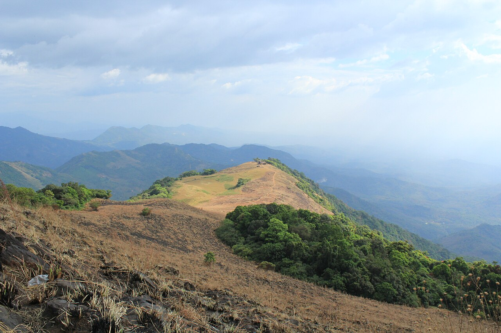
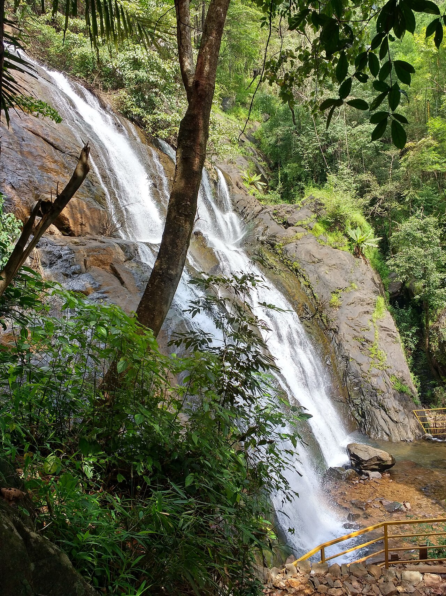
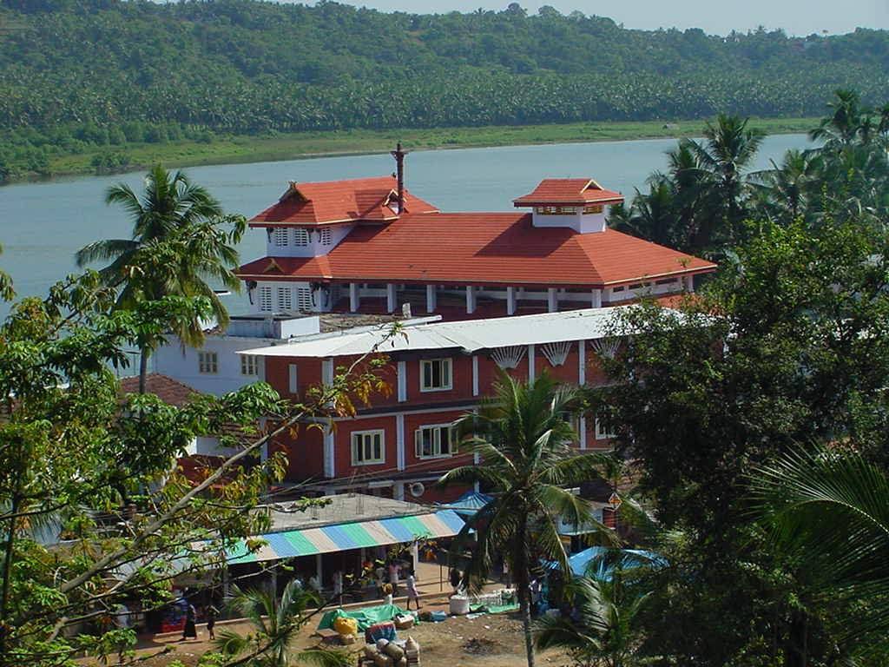
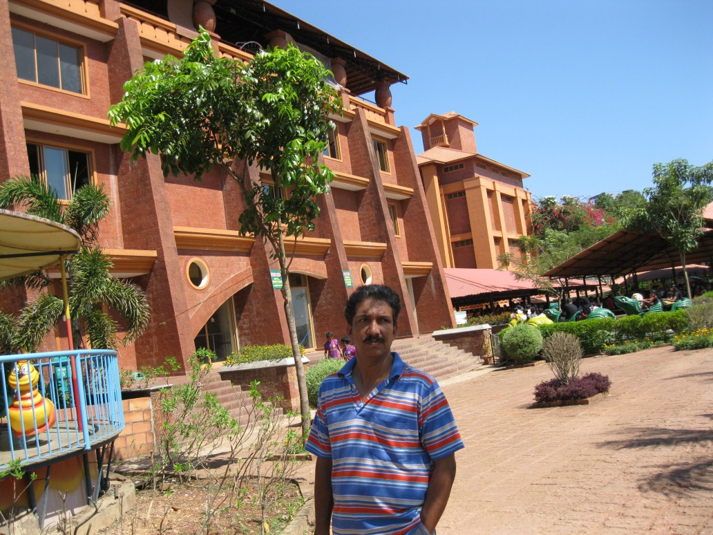
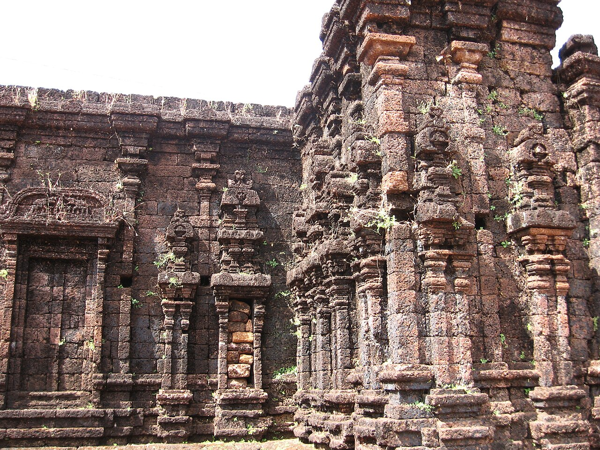
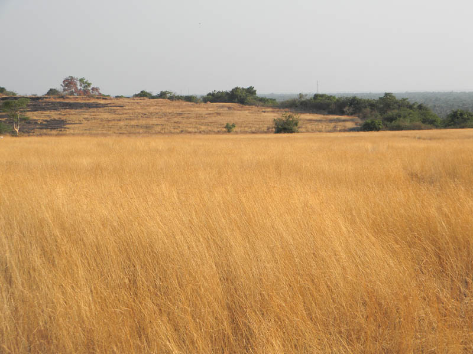

IXORAA lush homestay retreat
Call to book
Around Niduvaloor
Hills, waterfalls, temples, a seaside fort and Kerala’s drive-in beach — all within reach of Niduvaloor.
Tourist attractions


Seven-tier falls, natural pools and a nature trail near Paithalmala.
Directions →

Famous Muthappan worship and the Theyyam tradition.
Directions →
A water and amusement park for a full family day out.
Directions →

Laterite landscape, seasonal greenery and a heritage viewpoint.
Directions →
A seaside fort and one of Kannur’s best-known heritage sites.
Directions →
Kerala’s famous drive-in beach, with a long shore for sunset drives.
Directions →Photographs are of the places themselves. Ask us when you book and we will suggest a realistic plan from Niduvaloor.
Featured day trips
Local experiences
From village walks to hill viewpoints, Kerala is close enough to fold into a single stay.
Map
Niduvaloor Gate, Kannur district
Palakkayam Thattu ↗ Paithalmala ↗ Ezharakund Waterfalls ↗ Alakapuri Waterfalls ↗ Muthappan Temple ↗ Vismaya ↗ Rajarajeswara Temple ↗ Madayi Para ↗ St. Angelo Fort ↗ Muzhappilangad Beach ↗